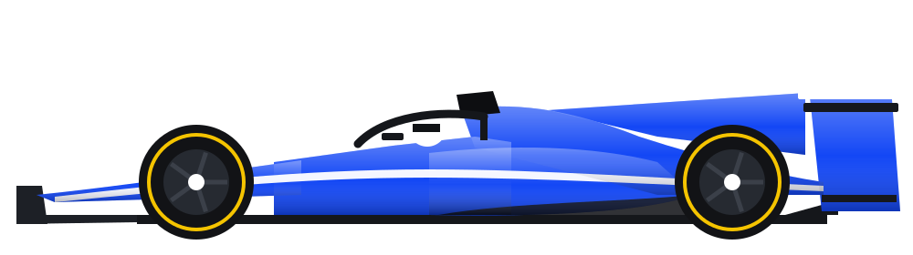

1 · Tela inicial como painel (fundo 3D vivo, carro 3D, próxima corrida, campeonato, notícias, modos)
F1 GUIDELINEStemporada 2026
?⚙
Sua equipe · campanhaWILLIAMS

⟲ carro 3D girando
Próxima corrida · rodada 20
GP DE SÃO PAULO
03dias14h☁ 35%chuva
CONTINUAR ›
5º
Campeonato
142 PTS
▲ 2 posições
🏆 CAMPANHA
▶ GRANDE PRÊMIO
🌐 MUNDIAL F1
👑 HISTÓRIA
NOTÍCIASSainz renova até 2028 ●Albon: "o carro novo chega em Interlagos" ●Chuva prevista para o domingo em São Paulo ●Williams sobe para 5º no campeonato
fundo: voo lento e desfocado sobre a próxima pista (mapa real)
carro 3D na pintura da equipe girando no pedestal
números contam até o valor ao abrir
2 · Animação de entrada (0,0 s → 0,9 s)
1 · faixa na cor da equipe varre a tela WILLIAMS
2 · carro gira e entra; título desliza3 · cartões entram um a um